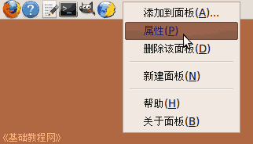
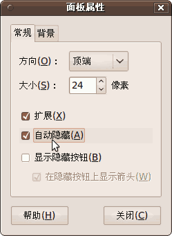
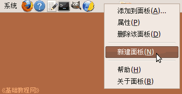
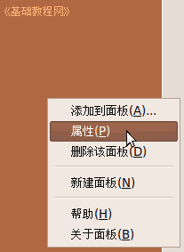
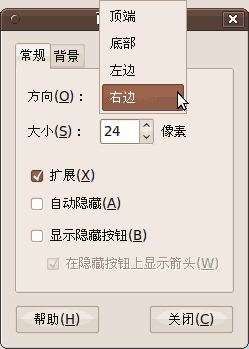

Ubuntu/GNOME 桌面程序指南
作者：TeliuTe 来源：基础教程网
三、面板属性 返回目录 下一课面板可以隐藏、添加和一些修饰操作；
1、自动隐藏
1）在面板的空白处点右键，在出来的菜单里选“属性”命令；

2）在出来的属性对话框里，打勾“自动隐藏”，还可以打勾下面的显示隐藏按钮，在面板两端有按钮；

3）这样面板在不用时会自动隐藏起来，想用的时候，把鼠标移过去面板就会出来；
2、添加面板
1）在面板的空白处点右键，在出来的菜单里选“新建面板”命令；

2）面板会自动出现在右侧，可以在它上面点右键，打开属性对话框，选择摆放的位置；

3）点击方向旁边的下拉按钮，在出来的列表中选择一个方向；

4）同样可以在这个面板上添加应用程序图标和按钮；
本节学习了面板属性的基础知识，如果你成功地完成了练习，请继续学习下一课内容；
本教程由86团学校TeliuTe制作|著作权所有
基础教程网：http://teliute.org/
美丽的校园……
转载和引用本站内容，请保留版权信息和本站链接。